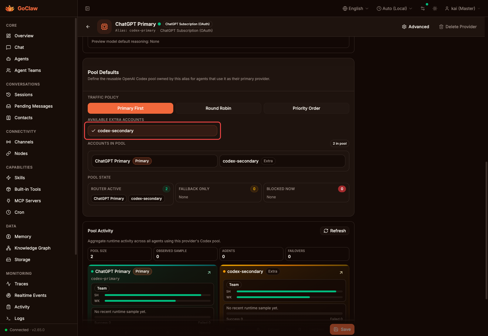
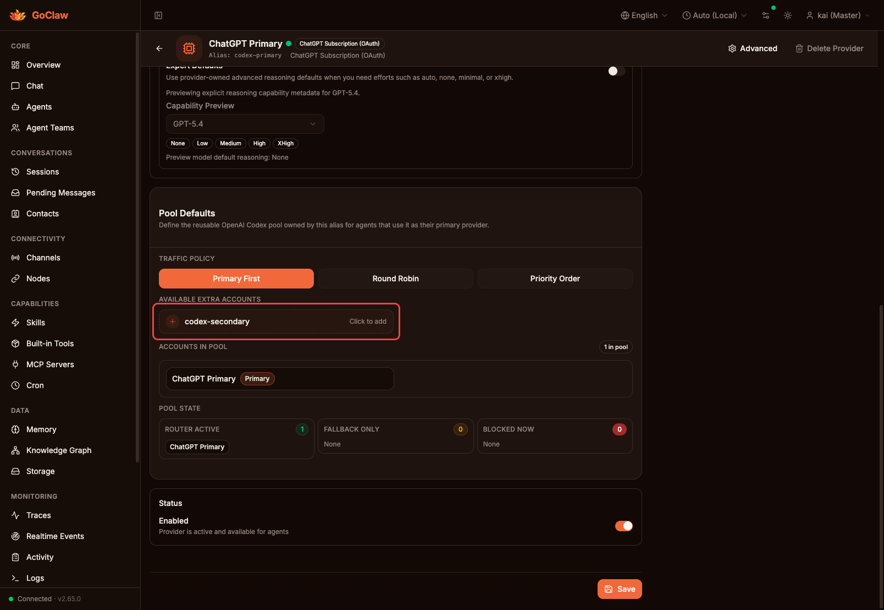
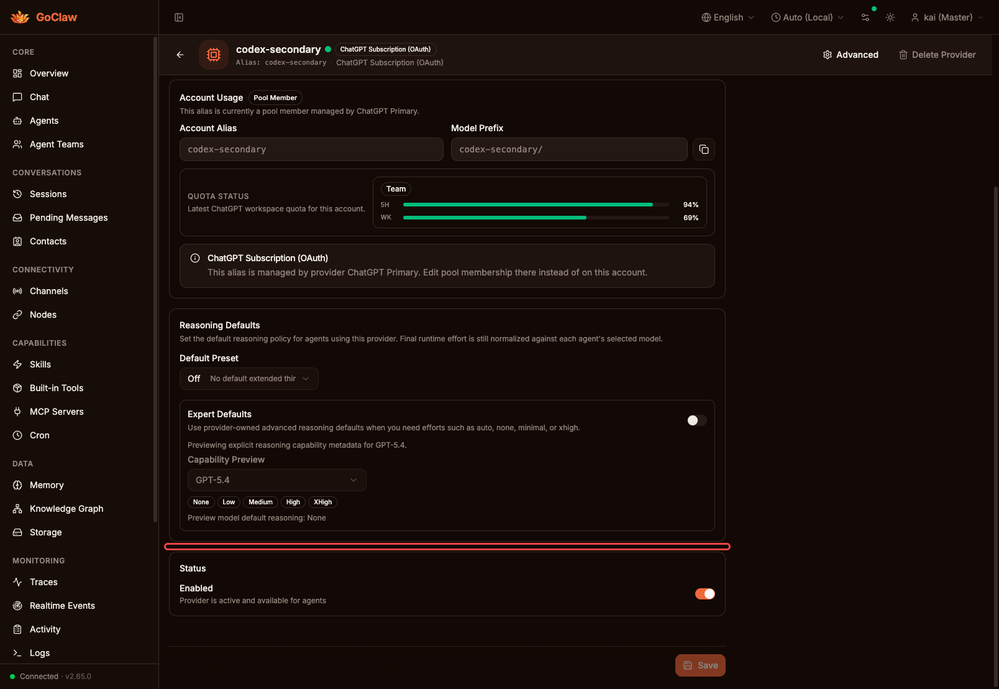
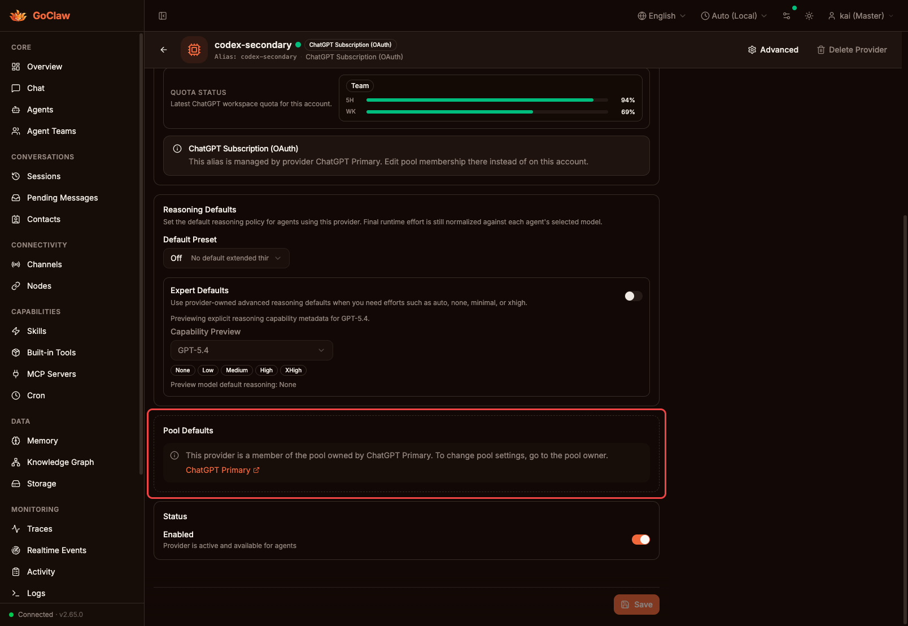
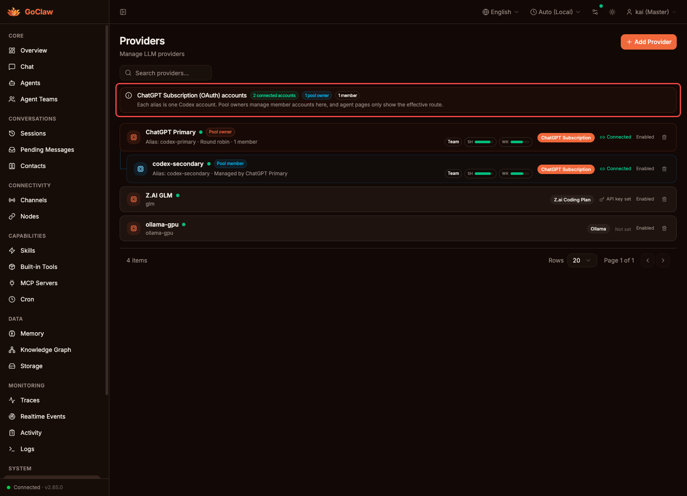
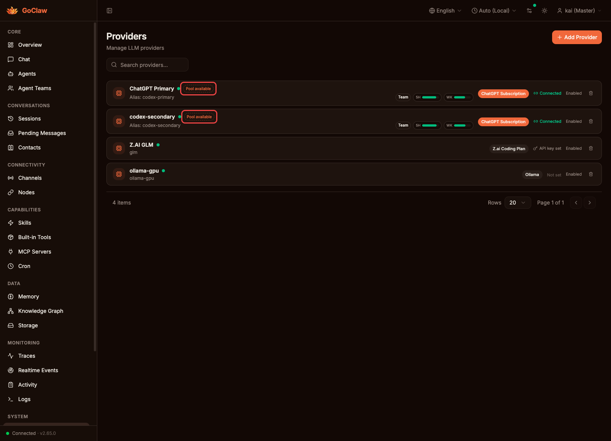
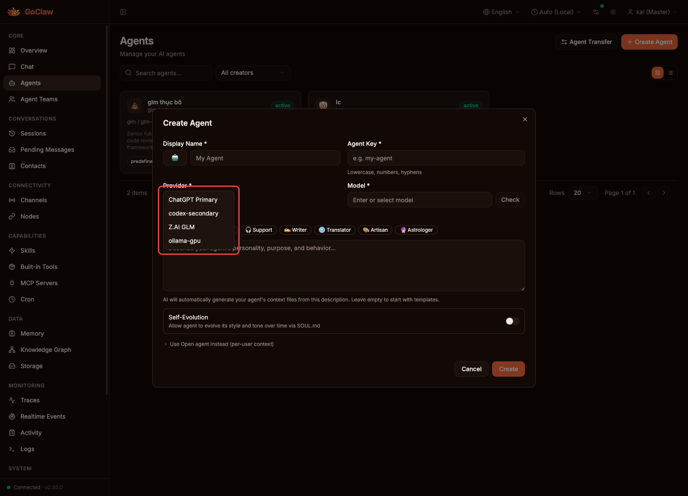
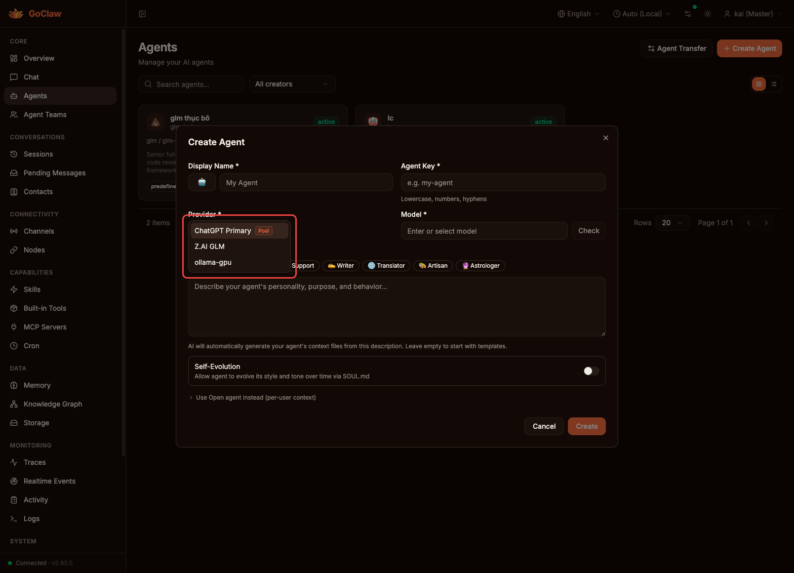
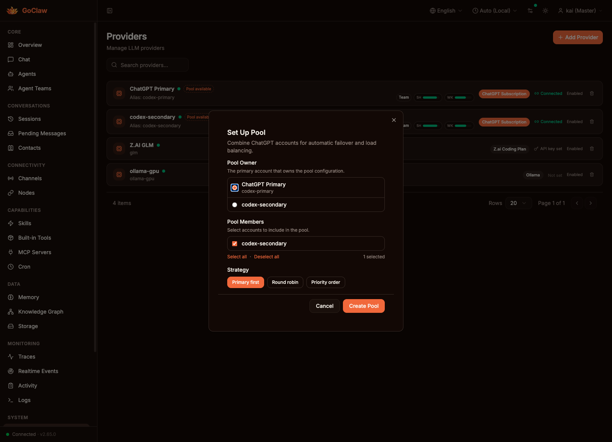

nextlevelbuilder/goclaw#671 · Closes #670 · Relates #583
Dashed primary border + icon badge + "Click to add" hint. Unmistakably interactive in both themes.
Backend skips unknown members instead of blocking saves. Deleted/disabled providers no longer cause errors.
Pool members now show which pool they belong to, with a direct link to the owner provider.
Per-card "Pool available" badge replaces verbose info banner. One-click wizard to create pools from unpooled accounts.
Pool members hidden from agent provider dropdown. Only pool owners listed — routing handles members automatically.
Before: bare text, no icon, invisible border in dark mode. After: dashed primary border, + icon badge, "Click to add" label.


Before: pool section completely hidden, no explanation. After: "Pool Defaults" section shows owner name + clickable link.


Before: verbose info banner with pool stats took up space. After: clean per-card "Pool available" badge on each unpooled account.


Before: pool member (codex-secondary) shown as standalone option, no pool indicator. After: member hidden, pool owner shows "Pool" badge so users know it routes to multiple accounts.


New one-click wizard dialog opened from any "Pool available" badge. Select owner, members, strategy — all in one step.
